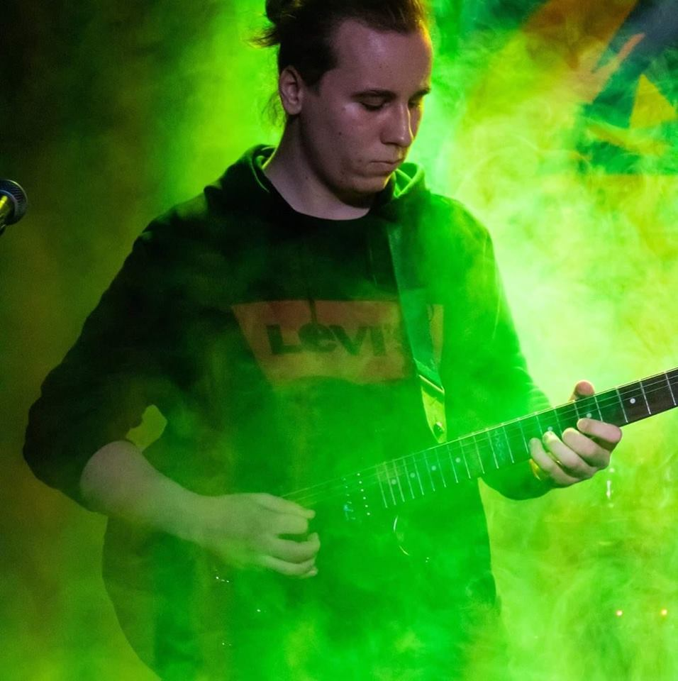

| ez úgyis nari lesz | Személyi adatok | Rátóczi Martin 2000.01.01 06701233216 4031, Debrecen linked.in/nincsen |  |
| Név: Szül. Dátum: Telefon: Lakcím: Linked.in: | |||
| Célkitűzés: Eddigi tudásom és tapasztalatomat felhasználva szeretném továbbfejleszteni a gyorsan és dinamikusan fejlődő céget, mely engem választ és rám bízza azt a munkát, melyet képességeimnek megfelelően tökéletesen el tudok végezni, tisztességesen és szorgalmasan. | |||
| Szakmai tapasztalatok: | |||
| 2017 | NI Hungary Kft.: | ||
| Főbb Feladatok: -Akatrészek beszerzése -Könyvelési ügyintézés -Adóvizsgálati körültekintés -Hálózatok tervezése -Halózatok fenttartása -A cég felsőbb ügyeinek igazgatása | |||
| Szakmai sikerek: Ebben az évben több, mint háromszoros bevételre tett szert a cég, mellyel megdöntött eddigi minden rekordot magyar- és világviszonlyatban is. Az "Év embere 2017" és a "Cég legjobb vezetője 2017 by NI" díját is elnyertem. | |||
| 2015-2017 | Cisco Networking Inc.: | ||
| Főbb feladatok: -Cégigazgatás -Leányvállalatokkal való kapcsolattartás -Hálózattervezési jóváhagyás -gazdasági menedzsment | |||
| Szakmai sikerek: Marketing ismereteimmel ismerté és nemzetközile elismertté tettema céget, mely meghozta a Cisco népszerűségét elég hamar. A Cisco Netacad alapötlet kitalálása és alapjainak megtervezése. | |||
| Tanulmányok: | |||
| 2012-2015 | Harvard University IT Major | ||
| 2010-2012 | Medgyessy Ferenc Gimnázium és Művészeti Szakgimnázium | ||
| Nyelvismeretek: | |||
| Angol | Felsőfokú szakmai, azaz C2-es nyelvvizsga. Hibátlan emelt angol érettségi, anyanyelvi szintű beszédkészség. | ||
| Német | Anyanyelvi és szakmai nyelvismeret. C1-es nyelvvizsga | ||
| Espanol | Arriba ME gusta, Si Si Carramba! | ||
| Olasz | Mamma Mia De la ragazzi Pisa de ferdetorony döla bágett | ||
| Egyéb: | |||
| -ECDL Vizsga -B Kategóriás Jogosítvány 2018 -Cisco CCNA Training 2015 | |||
| Hobbi: | |||
| Szabadidőmben gitározok Előfordul, hogy E-sportolok is Szeretek a szabadban kirándulni és futni | |||